WordPress User Guide
Thank you so much!
First of all, thank you for choosing us to create your site. To make your experience pleasant, we've added as much info as needed in this documentation. If you're stuck with anything, please don't hesitate to contact us.
- Site Name: Website Name
- Site URI: https://www.website.com/
- Web Agency: Crazy Domains
- Web Agency URI: https://www.crazydomains.com/
Users
This guide is for the User dashboard which covers the add user, your profile and list of users.
Add User
To add a new user, click on the Add New link in the left-hand navigation menu or the Add New button at the top of the page.
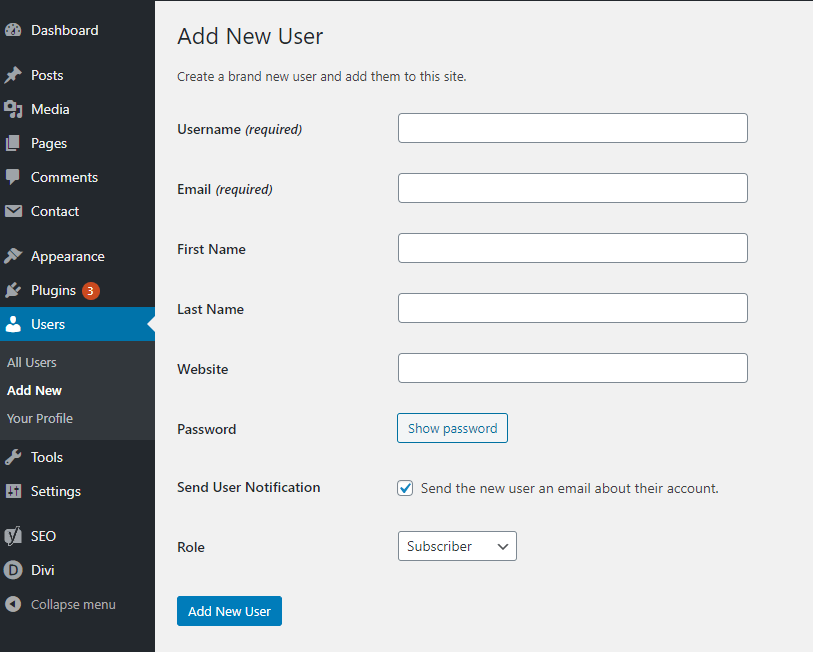
- Username – (mandatory) Enter the username of the new user here. This will also be used as the Login name for the user. Once saved, the Username can’t be changed
- E-mail – (mandatory) Enter a valid email address of the new user here. The email address must be unique for each user. If a published Post or Page is authored by this user and approved comments are made to that post or page, a notification email is sent to this email address
- First Name – Enter the first name of the new user here
- Last Name – Enter the last name of the new user in this text box
- Website – You may enter the new user's website URL in this text box
- Password – Clicking the Show password button will show you the password that has automatically been generated for the new user
- Send User Notification – When ticked, WordPress will send your new user an email about their account
- Role – Select the desired Role for this user from the dropdown list
Your Profile
To edit your profile details, simply click on your user name, when viewing the list of Users or click on the Edit link that appears beneath your user name when hovering your cursor over each row. Alternatively, click on the Your Profile link in the left-hand navigation.
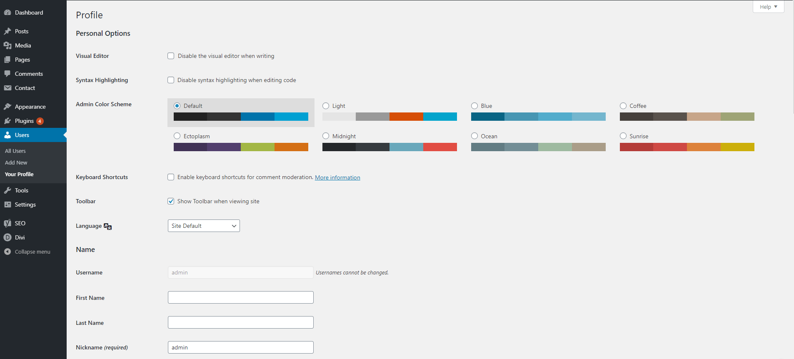
List Users
This are on the dashboard displays all the existing users for the site. Users with roles other than Administrator will see fewer options as they are logged in. Depending on your Role, you can also add new users as well as manage their Roles.
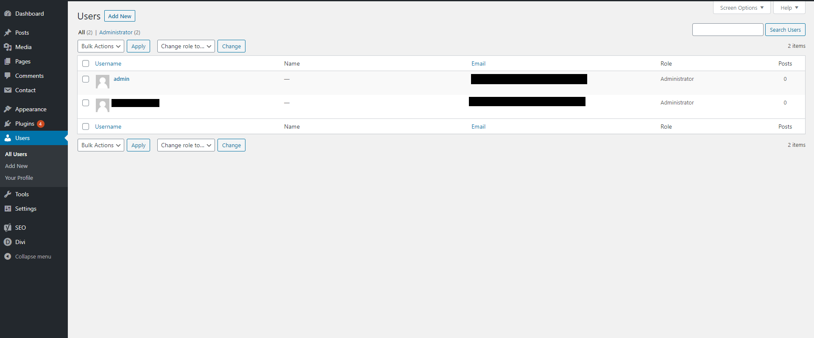
Updating Page using Site Builder
This is best used in visual mode, allowing you to build your page on the front-end of your website.
What Is The Visual Builder?
The Visual Builder comes in two forms: The standard “Back-end Builder” and the front-end “Visual Builder.” Both interfaces allow you to build exactly the same types of websites with the same content elements and design settings. The only difference is the interface. The Back-end Builder lives inside of the WordPress Dashboard and it can be accessed along with all of the other standard WordPress settings. It sits inside the WordPress UI and replaces the standard WordPress post editor. It’s great for making quick changes while you are inside the dashboard, but it’s also confined by the dashboard and is rendered as a block-based representation of your website. This tutorial will be focusing only on the visual builder.
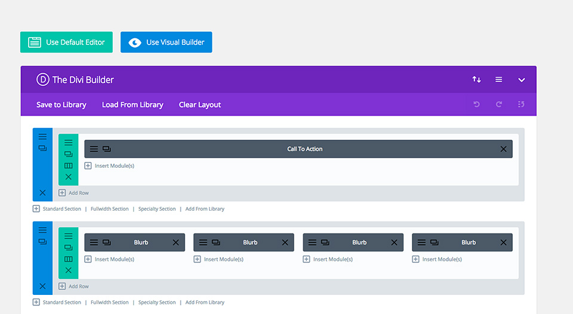
The all new Visual Builder, on the other hand, allows you to build your pages on the front-end of your website! It’s an amazing experience and allows for much faster design. When you add content or adjust design settings inside the visual builder, your changes appear instantly. You can click onto the page and just start typing. You can highlight text and adjust its font and style. You can add new content, build your page and watch everything happen right before your eyes.
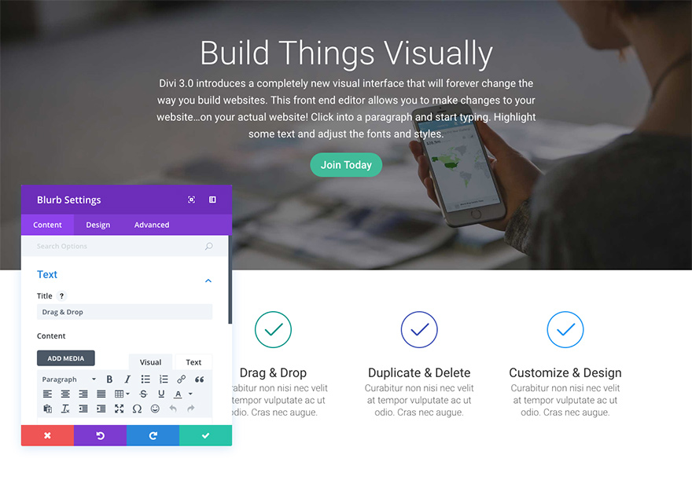
Enabling The Visual Builder
While you are logged in to your WordPress dashboard, you can navigate to any page on the front-end of your website and click the “Enable Visual Builder” button in the WordPress admin bar to launch the visual builder.
If you are editing your page on the back-end, you can switch to the visual builder by clicking the “Enable Visual Builder” button that sits at the top of the back-end Builder interface (note, you must first enable the Builder before the visual builder button will appear).
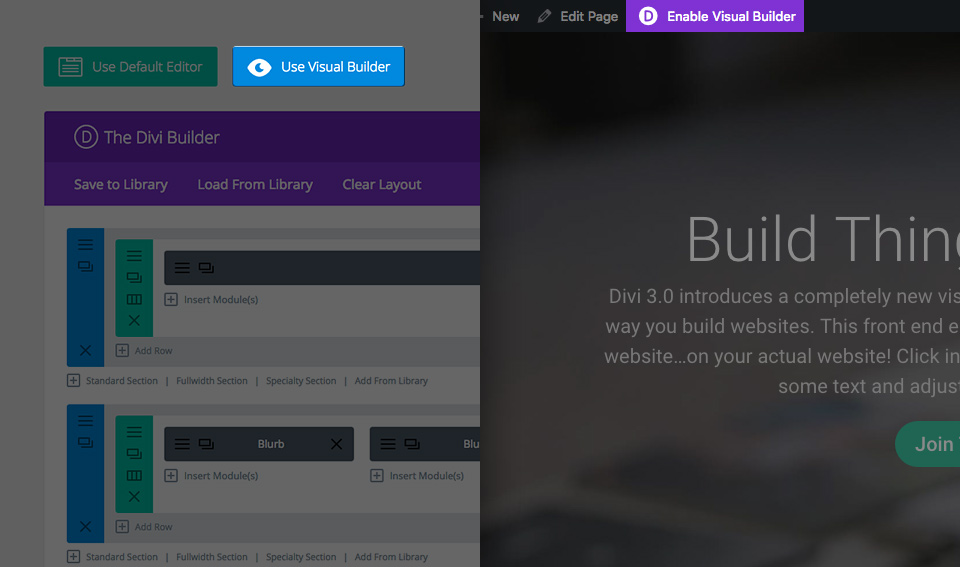
The Visual Builder Basics
Builder’s power lies in the Visual Builder, a drag and drop page builder that allows you to build just about any type of website by combining and arranging content elements.
The builder uses three main building blocks: Sections, Rows and Modules. Using these in unison allows you to create a countless array of page layouts. Sections are the largest building blocks, and they house groups of rows. Rows sit inside of sections and are used to house modules. Modules are placed inside of rows. This is the structure of every Builder website.
Sections
The most basic and largest building blocks used in designing layouts with Builder are sections. These are used to create large groups of content, and they are the first thing you add to your page. There are three types of sections: Regular, Specialty and Full Width. Regular sections are made up of rows of columns while Full Width Sections are made up of full width modules that expand the entire width of the screen. Specialty sections allow for more advanced sidebar layouts.
Rows
Rows sit inside of sections and you can place any number of rows inside a section. There are many different column types to choose from. Once you define a column structure for your row, you can then place modules into a desired column. There is no limit to the number of modules you can place within a column.
Modules
Modules are the content elements that make up your website. Every module that builder has can fit into any column width and they are all fully responsive.
Building Your First Page
The three basic building blocks (Sections, Rows and Modules) are used to build your page.
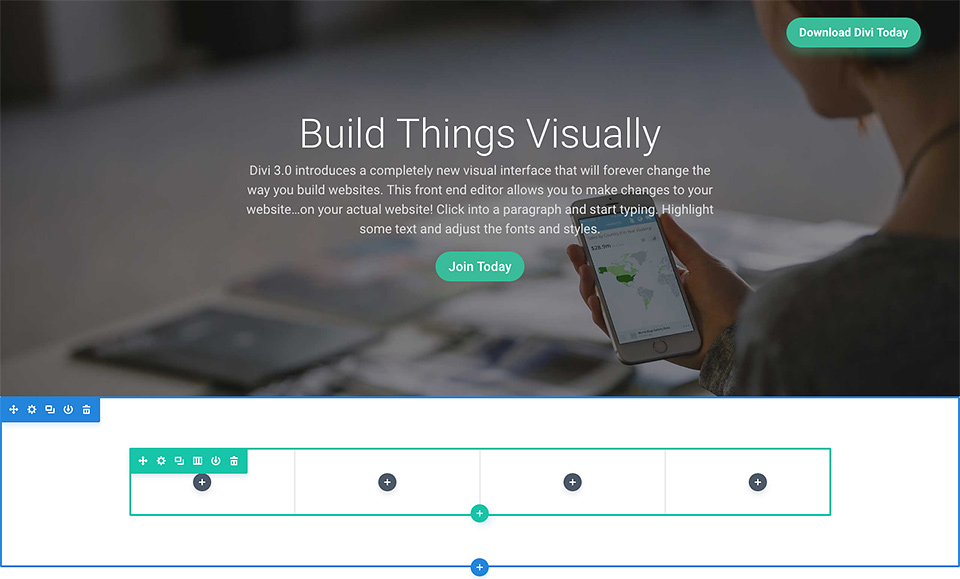
Adding Your First Section
Before you can add anything to your page, you will first need to add a section. Sections can be added by clicking the blue (+) button. When you hover over a section that already exists on the page, a blue (+) button will appear below it. When clicked, a new section will be added below the section you are currently hovered over.
If you are starting a brand new page, then your first section will be added automatically.
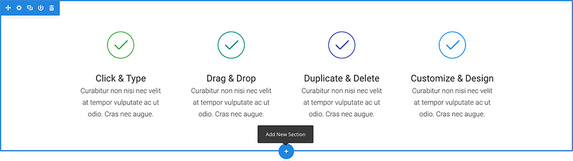
Adding Your First Row
After you have added your first section you can start adding rows of columns inside of it. A section can house any number of rows, and you can mix and match rows of varying column types to create a variety of layouts.
To add a row, click the green (+) button inside of any empty section, or click the green (+) button that appears when hovering over any current row to add a new row below it. Once you have clicked the green (+) button you will be greeted with a list of column types. Choose your desired column and then you are ready to add your first module.
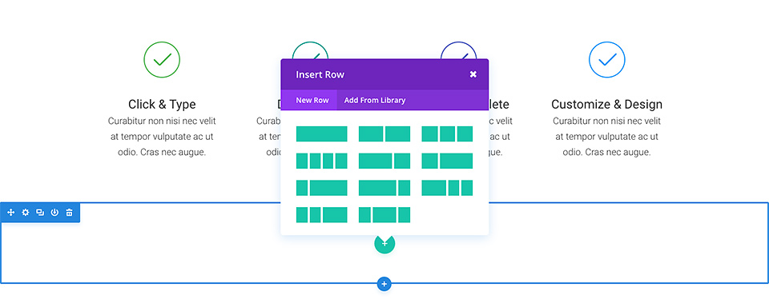
Adding Your First Module
Modules can be added inside of rows, and each row can house any number of modules. Modules are the content elements of your page, and builder comes with over 40 different elements that you can use to build with. You can use basic modules such as Text, Images and Buttons, or more advanced modules like Sliders, Portfolio Galleries and eCommerce Shops. We have individual tutorials for every single builder module, so if you want to learn more about the types of modules that builder provides then be sure to head back to the main document page and browse through the “Modules” section.
To add a module, click the gray (+) button that exists inside of any empty column or click the gray (+) button that exists when hovering over a module on the page to add a new Module below it. Once you have clicked the button, you will be greeted by a list of modules. Pick your desired module and it will be added to your page and the settings panel for the module will appear. Using this settings panel, you can begin configuring your module.
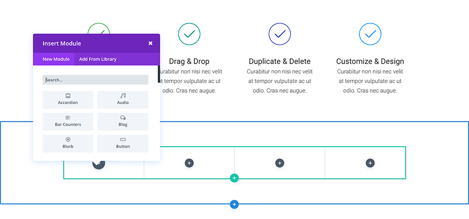
Configuring And Customizing Sections, Rows And Module
Each section, row and module can be customized in various ways. You can access an element’s settings panel by clicking the gear icon that exists when hovering over any element on the page.
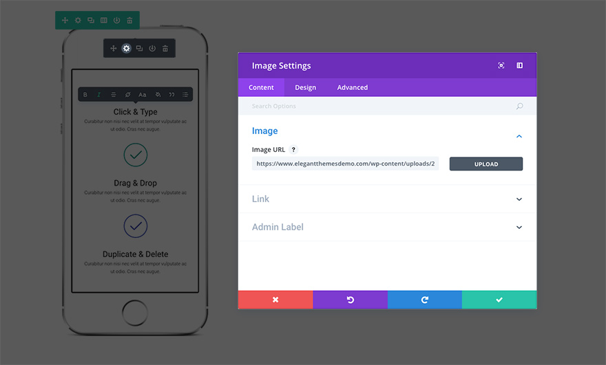
This will launch the settings panel for the specified element. Each settings panel is broken up into three tabs: Content, Design, and Advanced. Each tab is designed to make accessing and adjusting Builder’s large variety of settings quick and easy. The Content tab of course is where you can add content such as images, video, links, and admin labels. The Design tab is where we’ve place all of the built-in design settings for each element. Depending on what you’re editing you can control a wide variety of design settings with a click; including: typography, spacing (padding/margin), button styles, and more. Finally, if you want even more control you can head over to the Advanced tab where you can apply custom CSS, adjust visibility based on device, and (depending on which element you’re editing) do even more fine tuning.
Saving Your Page And Accessing Page Settings
To access general page settings, click the purple dock icon at the bottom of your screen. This will expand the settings bar and provide you with various options. You can open up your page settings by clicking the gear icon. Here you can adjust things like page background color and text color. You will also find the Save and Publish buttons as well as responsive preview toggles.
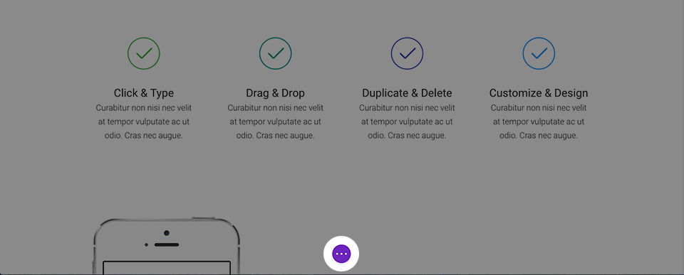
Jump-start Your Design With Pre-made Layouts
A great way to jump-start your new page is to start things off with a pre-made layout. Builder ships with over 20 pre-made layouts that cover a variety of common page types, such as “About Us,” “Contact,” “Blog,” “Portfolio,” etc. You can load these up and then swap out the demo content for your own. Your new page will be finished before you know it! To learn more about using pre-made layouts, be sure to take a look at our in-depth pre-made layouts tutorial.
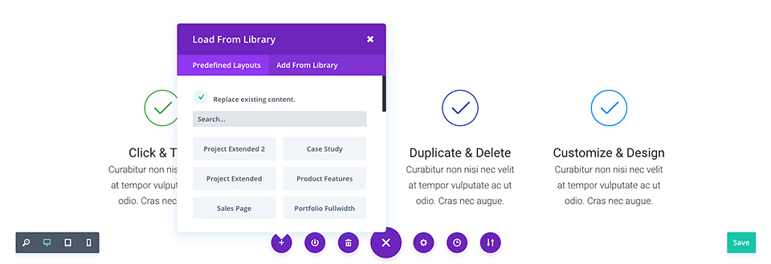
Saving Your Own Layouts To The Library
In addition to using the pre-made layouts that come with Builder, you can also save your own creations to the Builder Library. When a design is saved as a Builder Layout in the Builder Library, it can be loaded onto new pages. The more you build up your library with your favorite designs, the faster you will be able to create new websites.
To save an item to the library, click the library icon that exists when hovering over any element and within the page settings bar. Once an item has been added to the library, it will appear in the “Add From Library” tab when adding new Builder layouts, sections, rows and modules.
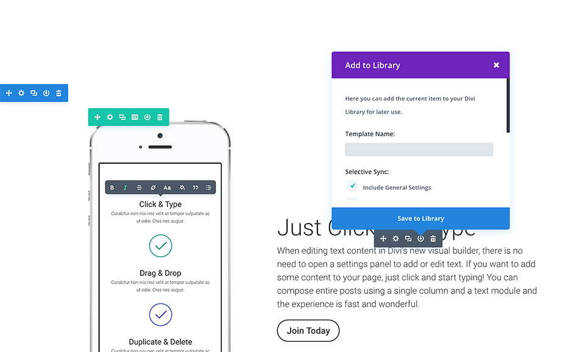
So by now you have added your first sections, rows and modules to your page. You have adjusted their settings and begun building and customizing your design.
JCH Optimizer- Cache Clearing
How to access JCH Optimizer
Upon making changes to the website. Changes might take sometime to reflect due to the caching. Clear the cache after making changes in order for the updates to reflect on the website.
- Go to Settings > JCH Optimizer Pro.
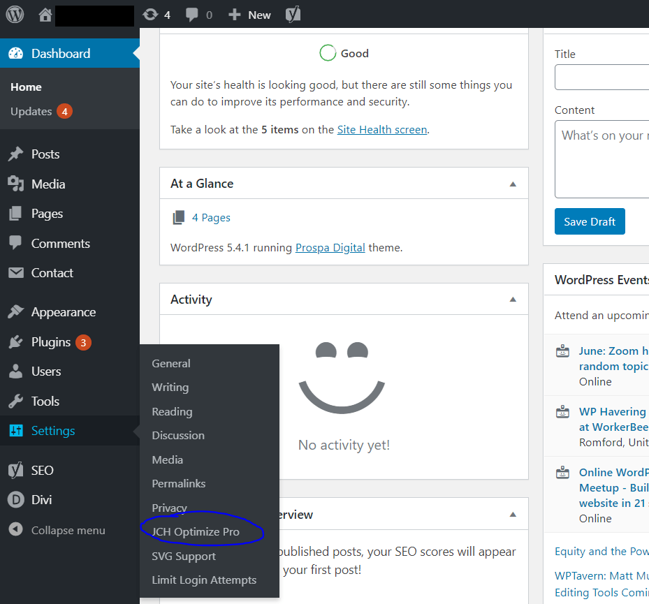
How to clear cache
- When on the JCH Optimizer Plugin go to Basic Options Tab.
- Scroll down to bottom and find Miscellaneous Settings
- Click the Clean Cache button with an X icon
- Lastly, Click the Delete Cache button in the upper bar or the admin bar
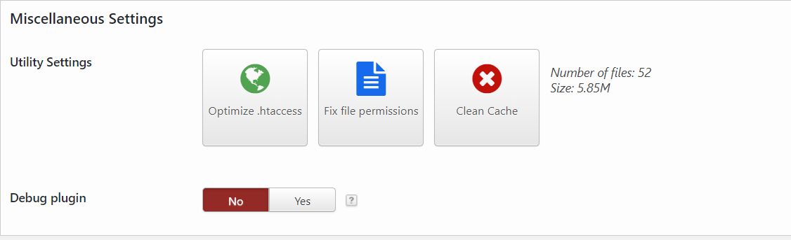
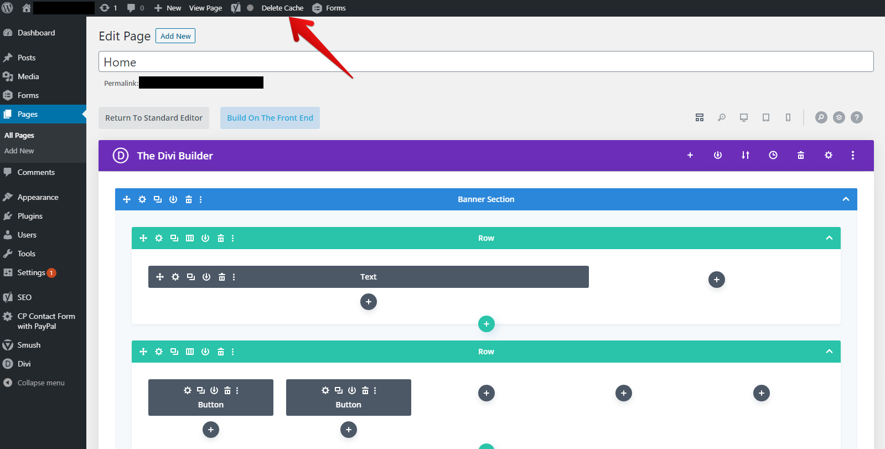